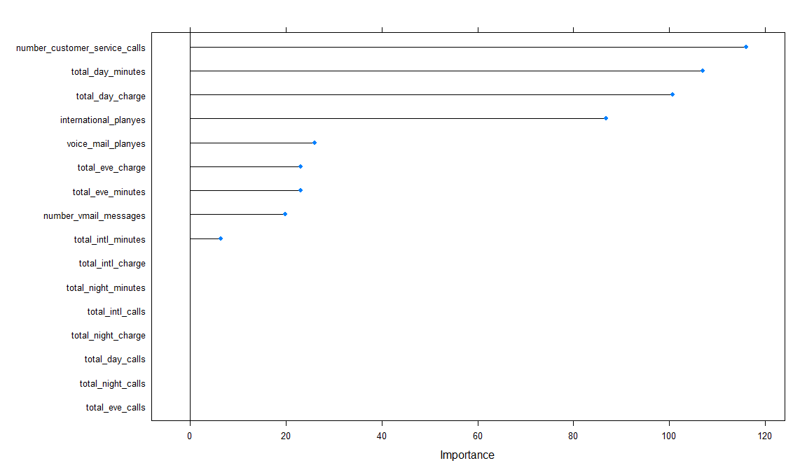
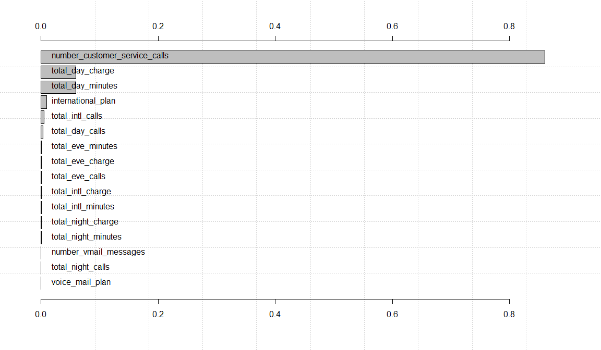
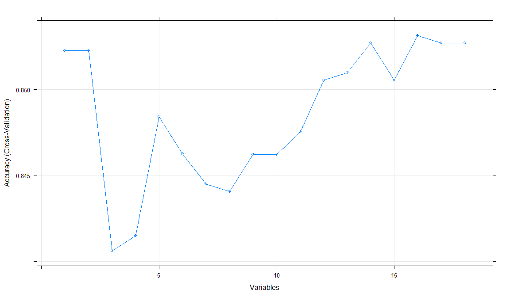
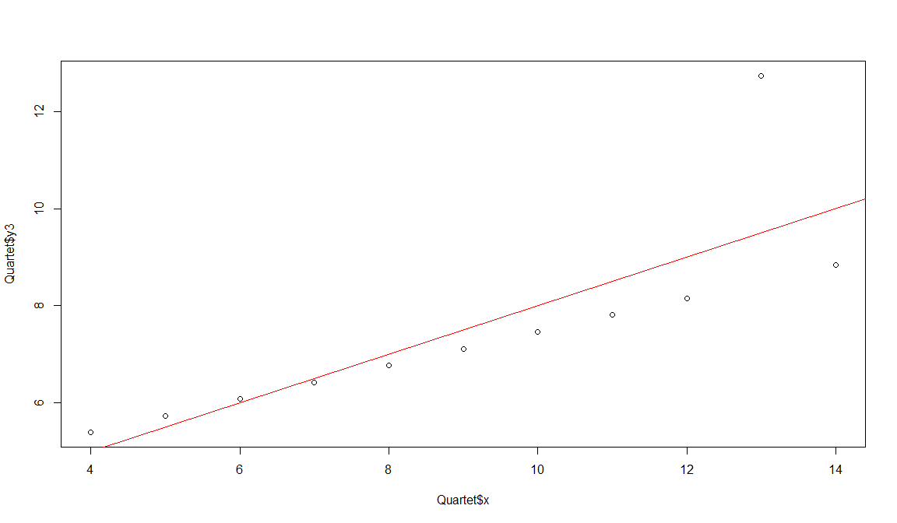
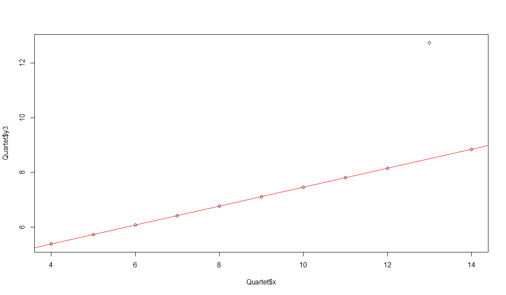
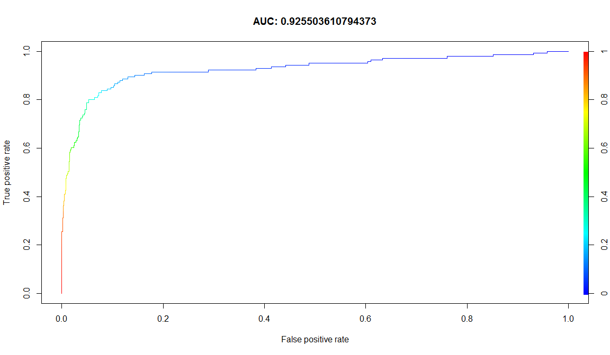
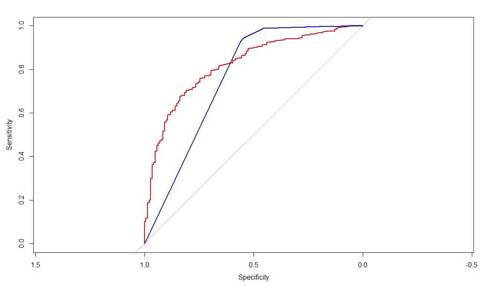
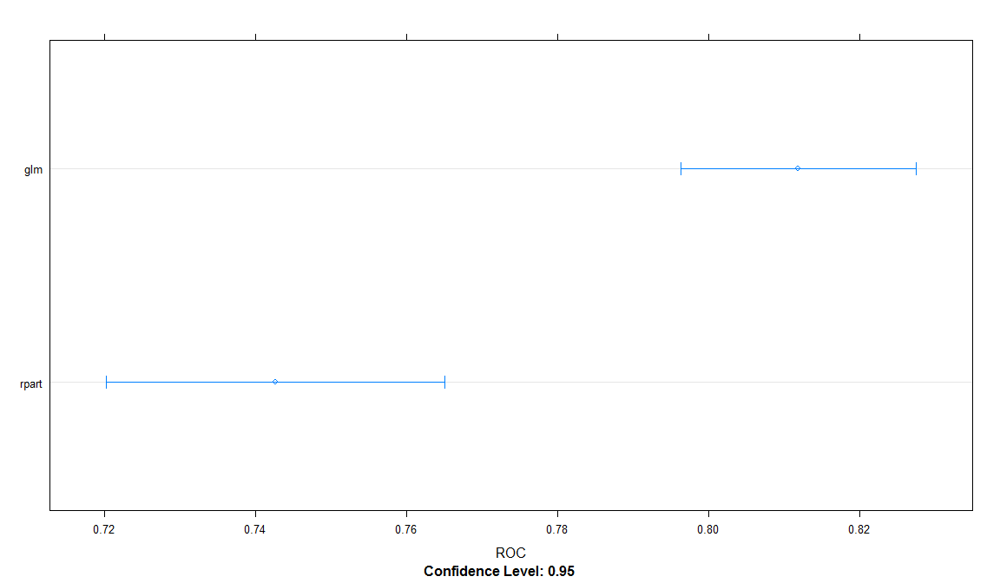
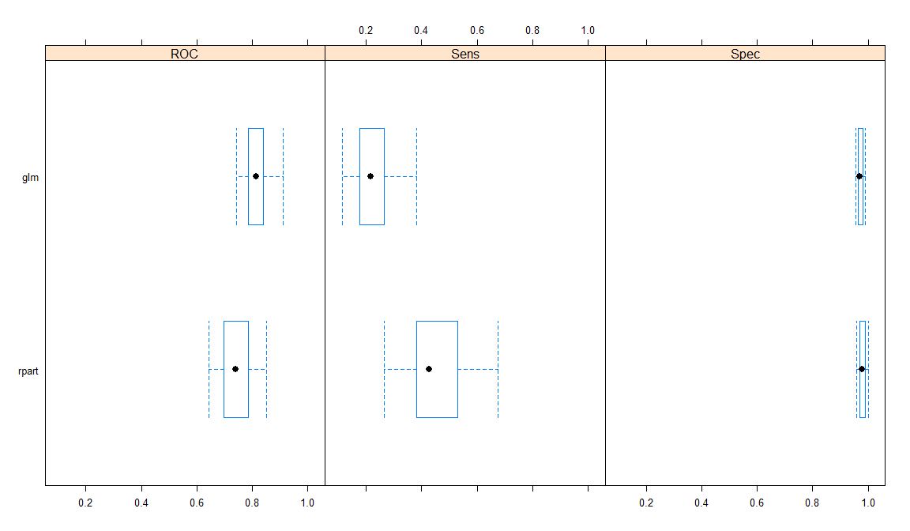

Evluating model performance
Jose Parreno Garcia
February 2018
library(knitr)We will look at:
- Cross-validation
- Variable importance
- Feature correlation
- Feature selection
1 Cross-validation

1.1 Preparing the data
library(C50)
data(churn)
str(churnTrain)## 'data.frame': 3333 obs. of 20 variables:
## $ state : Factor w/ 51 levels "AK","AL","AR",..: 17 36 32 36 37 2 20 25 19 50 ...
## $ account_length : int 128 107 137 84 75 118 121 147 117 141 ...
## $ area_code : Factor w/ 3 levels "area_code_408",..: 2 2 2 1 2 3 3 2 1 2 ...
## $ international_plan : Factor w/ 2 levels "no","yes": 1 1 1 2 2 2 1 2 1 2 ...
## $ voice_mail_plan : Factor w/ 2 levels "no","yes": 2 2 1 1 1 1 2 1 1 2 ...
## $ number_vmail_messages : int 25 26 0 0 0 0 24 0 0 37 ...
## $ total_day_minutes : num 265 162 243 299 167 ...
## $ total_day_calls : int 110 123 114 71 113 98 88 79 97 84 ...
## $ total_day_charge : num 45.1 27.5 41.4 50.9 28.3 ...
## $ total_eve_minutes : num 197.4 195.5 121.2 61.9 148.3 ...
## $ total_eve_calls : int 99 103 110 88 122 101 108 94 80 111 ...
## $ total_eve_charge : num 16.78 16.62 10.3 5.26 12.61 ...
## $ total_night_minutes : num 245 254 163 197 187 ...
## $ total_night_calls : int 91 103 104 89 121 118 118 96 90 97 ...
## $ total_night_charge : num 11.01 11.45 7.32 8.86 8.41 ...
## $ total_intl_minutes : num 10 13.7 12.2 6.6 10.1 6.3 7.5 7.1 8.7 11.2 ...
## $ total_intl_calls : int 3 3 5 7 3 6 7 6 4 5 ...
## $ total_intl_charge : num 2.7 3.7 3.29 1.78 2.73 1.7 2.03 1.92 2.35 3.02 ...
## $ number_customer_service_calls: int 1 1 0 2 3 0 3 0 1 0 ...
## $ churn : Factor w/ 2 levels "yes","no": 2 2 2 2 2 2 2 2 2 2 ...# Remove certain variables that we are not going to use
churnTrain = churnTrain[,! names(churnTrain) %in% c("state"
, "area_code"
, "account_length") ]
set.seed(2)
ind = sample(2, nrow(churnTrain), replace = TRUE, prob=c(0.7,0.3))
trainset = churnTrain[ind == 1,]
testset = churnTrain[ind == 2,]
dim(trainset)## [1] 2315 17dim(testset)## [1] 1018 17split.data = function(data, p = 0.7, s = 666){
set.seed(s)
index = sample(1:dim(data)[1])
train = data[index[1:floor(dim(data)[1] * p)], ]
test = data[index[((ceiling(dim(data)[1] * p)) + 1):dim(data)[1]], ]
return(list(train = train, test = test))
}1.2 Estimating model performance with k-fold Cross-Validation
library(e1071)
ind = cut(1:nrow(churnTrain), breaks=10, labels=F)
accuracies = c()
for (i in 1:10) {
fit = svm(churn ~., churnTrain[ind != i,])
predictions = predict(fit, churnTrain[ind == i, !names(churnTrain) %in% c("churn")])
correct_count = sum(predictions == churnTrain[ind ==i,c("churn")])
accuracies = append(correct_count / nrow(churnTrain[ind ==i,]), accuracies)
}
accuracies## [1] 0.9341317 0.8948949 0.8978979 0.9459459 0.9219219 0.9281437 0.9219219 0.9249249 0.9189189 0.9251497mean(accuracies)## [1] 0.9213852for (i in 1:10) {
fit = naiveBayes(churn ~., churnTrain[ind != i,])
predictions = predict(fit, churnTrain[ind == i, ! names(churnTrain)
%in% c("churn")])
correct_count = sum(predictions == churnTrain[ind == i,c("churn")])
accuracies = append(correct_count / nrow(churnTrain[ind == i,]),
accuracies)
}
accuracies## [1] 0.8892216 0.8618619 0.8498498 0.9159159 0.8588589 0.8832335 0.8978979 0.8918919 0.8618619 0.8832335 0.9341317 0.8948949 0.8978979 0.9459459 0.9219219 0.9281437 0.9219219 0.9249249 0.9189189 0.9251497mean(accuracies)## [1] 0.90038391.3 Performing Cros-validation with e1071 package
tuned = tune.svm(churn~., data = trainset, gamma = 10^-2, cost = 10^2,
tuneControl=tune.control(cross=10))
summary(tuned)##
## Error estimation of 'svm' using 10-fold cross validation: 0.0808031tuned$performances## gamma cost error dispersion
## 1 0.01 100 0.0808031 0.02367426svmfit = tuned$best.model
table(trainset[,c("churn")], predict(svmfit))##
## yes no
## yes 234 108
## no 13 19601.4 Performing Cros-validation with caret package
library(e1071)
library(caret)
control = trainControl(method="repeatedcv", number=10,repeats=3)
library(caret)
model = train(churn~., data=trainset, method="rpart",
preProcess="scale", trControl=control)
model## CART
##
## 2315 samples
## 16 predictor
## 2 classes: 'yes', 'no'
##
## Pre-processing: scaled (16)
## Resampling: Cross-Validated (10 fold, repeated 3 times)
## Summary of sample sizes: 2084, 2083, 2084, 2084, 2084, 2082, ...
## Resampling results across tuning parameters:
##
## cp Accuracy Kappa
## 0.05555556 0.9010890 0.5224011
## 0.07456140 0.8637855 0.2430835
## 0.07602339 0.8561525 0.1676674
##
## Accuracy was used to select the optimal model using the largest value.
## The final value used for the model was cp = 0.05555556.2 Variable importance
2.1 With Caret package
importance = varImp(model, scale=FALSE)
importance## rpart variable importance
##
## Overall
## number_customer_service_calls 116.015
## total_day_minutes 106.988
## total_day_charge 100.648
## international_planyes 86.789
## voice_mail_planyes 25.974
## total_eve_charge 23.097
## total_eve_minutes 23.097
## number_vmail_messages 19.885
## total_intl_minutes 6.347
## total_night_minutes 0.000
## total_eve_calls 0.000
## total_intl_charge 0.000
## total_day_calls 0.000
## total_night_calls 0.000
## total_night_charge 0.000
## total_intl_calls 0.000plot(importance)
library(rpart)
model.rp = rpart(churn~., data=trainset)
model.rp$variable.importance## total_day_minutes total_day_charge number_customer_service_calls total_intl_minutes total_intl_charge total_eve_charge total_eve_minutes international_plan
## 111.645286 110.881583 58.486651 48.283228 47.698379 47.166646 47.166646 42.194508
## total_intl_calls number_vmail_messages voice_mail_plan total_night_calls total_eve_calls total_night_charge total_night_minutes total_day_calls
## 36.730344 19.884863 19.884863 7.195828 3.553423 1.754547 1.754547 1.4949862.2 With rminer package
library(rminer)
model=fit(churn~.,trainset,model="svm")
VariableImportance=Importance(model,trainset,method="sensv")
L=list(runs=1,sen=t(VariableImportance$imp),
sresponses=VariableImportance$sresponses)
mgraph(L,graph="IMP",leg=names(trainset),col="gray",Grid=10)
4 Feature selection
intl_plan = model.matrix(~ trainset.international_plan - 1,
data=data.frame(trainset$international_plan))
head(intl_plan)## trainset.international_planno trainset.international_planyes
## 1 1 0
## 2 1 0
## 3 0 1
## 4 1 0
## 5 1 0
## 6 0 1colnames(intl_plan) = c("trainset.international_planno"="intl_no", "trainset.international_planyes"= "intl_yes")
voice_plan = model.matrix(~ trainset.voice_mail_plan - 1,
data=data.frame(trainset$voice_mail_plan))
colnames(voice_plan) = c("trainset.voice_mail_planno" ="voice_no", "trainset.voice_mail_planyes"="voidce_yes")
trainset$international_plan = NULL
trainset$voice_mail_plan = NULL
trainset = cbind(intl_plan,voice_plan, trainset)
intl_plan = model.matrix(~ testset.international_plan - 1,
data=data.frame(testset$international_plan))
colnames(intl_plan) = c("testset.international_planno"="intl_no", "testset.international_planyes"= "intl_yes")
voice_plan = model.matrix(~ testset.voice_mail_plan - 1,
data=data.frame(testset$voice_mail_plan))
colnames(voice_plan) = c("testset.voice_mail_planno" ="voice_no", "testset.voice_mail_planyes"="voidce_yes")
testset$international_plan = NULL
testset$voice_mail_plan = NULL
testset = cbind(intl_plan,voice_plan, testset)
ldaControl = rfeControl(functions = ldaFuncs, method = "cv")
ldaProfile = rfe(trainset[, !names(trainset) %in% c("churn")],
trainset[,c("churn")],sizes = c(1:18), rfeControl = ldaControl)## Warning in lda.default(x, grouping, ...): variables are collinear
## Warning in lda.default(x, grouping, ...): variables are collinear
## Warning in lda.default(x, grouping, ...): variables are collinear
## Warning in lda.default(x, grouping, ...): variables are collinear
## Warning in lda.default(x, grouping, ...): variables are collinear
## Warning in lda.default(x, grouping, ...): variables are collinear
## Warning in lda.default(x, grouping, ...): variables are collinear
## Warning in lda.default(x, grouping, ...): variables are collinear
## Warning in lda.default(x, grouping, ...): variables are collinear
## Warning in lda.default(x, grouping, ...): variables are collinear
## Warning in lda.default(x, grouping, ...): variables are collinear
## Warning in lda.default(x, grouping, ...): variables are collinear
## Warning in lda.default(x, grouping, ...): variables are collinear
## Warning in lda.default(x, grouping, ...): variables are collinear
## Warning in lda.default(x, grouping, ...): variables are collinear
## Warning in lda.default(x, grouping, ...): variables are collinear
## Warning in lda.default(x, grouping, ...): variables are collinear
## Warning in lda.default(x, grouping, ...): variables are collinear
## Warning in lda.default(x, grouping, ...): variables are collinear
## Warning in lda.default(x, grouping, ...): variables are collinear
## Warning in lda.default(x, grouping, ...): variables are collinear
## Warning in lda.default(x, grouping, ...): variables are collinear
## Warning in lda.default(x, grouping, ...): variables are collinear
## Warning in lda.default(x, grouping, ...): variables are collinear
## Warning in lda.default(x, grouping, ...): variables are collinear
## Warning in lda.default(x, grouping, ...): variables are collinear
## Warning in lda.default(x, grouping, ...): variables are collinear
## Warning in lda.default(x, grouping, ...): variables are collinear
## Warning in lda.default(x, grouping, ...): variables are collinear
## Warning in lda.default(x, grouping, ...): variables are collinear
## Warning in lda.default(x, grouping, ...): variables are collinear
## Warning in lda.default(x, grouping, ...): variables are collinear
## Warning in lda.default(x, grouping, ...): variables are collinear
## Warning in lda.default(x, grouping, ...): variables are collinear
## Warning in lda.default(x, grouping, ...): variables are collinear
## Warning in lda.default(x, grouping, ...): variables are collinear
## Warning in lda.default(x, grouping, ...): variables are collinear
## Warning in lda.default(x, grouping, ...): variables are collinear
## Warning in lda.default(x, grouping, ...): variables are collinear
## Warning in lda.default(x, grouping, ...): variables are collinear
## Warning in lda.default(x, grouping, ...): variables are collinear
## Warning in lda.default(x, grouping, ...): variables are collinear
## Warning in lda.default(x, grouping, ...): variables are collinear
## Warning in lda.default(x, grouping, ...): variables are collinear
## Warning in lda.default(x, grouping, ...): variables are collinear
## Warning in lda.default(x, grouping, ...): variables are collinear
## Warning in lda.default(x, grouping, ...): variables are collinear
## Warning in lda.default(x, grouping, ...): variables are collinear
## Warning in lda.default(x, grouping, ...): variables are collinear
## Warning in lda.default(x, grouping, ...): variables are collinear
## Warning in lda.default(x, grouping, ...): variables are collinear
## Warning in lda.default(x, grouping, ...): variables are collinear
## Warning in lda.default(x, grouping, ...): variables are collinear
## Warning in lda.default(x, grouping, ...): variables are collinear
## Warning in lda.default(x, grouping, ...): variables are collinear
## Warning in lda.default(x, grouping, ...): variables are collinear
## Warning in lda.default(x, grouping, ...): variables are collinear
## Warning in lda.default(x, grouping, ...): variables are collinear
## Warning in lda.default(x, grouping, ...): variables are collinear
## Warning in lda.default(x, grouping, ...): variables are collinear
## Warning in lda.default(x, grouping, ...): variables are collinear
## Warning in lda.default(x, grouping, ...): variables are collinear
## Warning in lda.default(x, grouping, ...): variables are collinear
## Warning in lda.default(x, grouping, ...): variables are collinear
## Warning in lda.default(x, grouping, ...): variables are collinear
## Warning in lda.default(x, grouping, ...): variables are collinear
## Warning in lda.default(x, grouping, ...): variables are collinear
## Warning in lda.default(x, grouping, ...): variables are collinear
## Warning in lda.default(x, grouping, ...): variables are collinear
## Warning in lda.default(x, grouping, ...): variables are collinear
## Warning in lda.default(x, grouping, ...): variables are collinear
## Warning in lda.default(x, grouping, ...): variables are collinear
## Warning in lda.default(x, grouping, ...): variables are collinear
## Warning in lda.default(x, grouping, ...): variables are collinear
## Warning in lda.default(x, grouping, ...): variables are collinear
## Warning in lda.default(x, grouping, ...): variables are collinear
## Warning in lda.default(x, grouping, ...): variables are collinear
## Warning in lda.default(x, grouping, ...): variables are collinear
## Warning in lda.default(x, grouping, ...): variables are collinear
## Warning in lda.default(x, grouping, ...): variables are collinear
## Warning in lda.default(x, grouping, ...): variables are collinear
## Warning in lda.default(x, grouping, ...): variables are collinear
## Warning in lda.default(x, grouping, ...): variables are collinear
## Warning in lda.default(x, grouping, ...): variables are collinear
## Warning in lda.default(x, grouping, ...): variables are collinear
## Warning in lda.default(x, grouping, ...): variables are collinear
## Warning in lda.default(x, grouping, ...): variables are collinear
## Warning in lda.default(x, grouping, ...): variables are collinear
## Warning in lda.default(x, grouping, ...): variables are collinear
## Warning in lda.default(x, grouping, ...): variables are collinear
## Warning in lda.default(x, grouping, ...): variables are collinear
## Warning in lda.default(x, grouping, ...): variables are collinear
## Warning in lda.default(x, grouping, ...): variables are collinear
## Warning in lda.default(x, grouping, ...): variables are collinear
## Warning in lda.default(x, grouping, ...): variables are collinear
## Warning in lda.default(x, grouping, ...): variables are collinear
## Warning in lda.default(x, grouping, ...): variables are collinear
## Warning in lda.default(x, grouping, ...): variables are collinear
## Warning in lda.default(x, grouping, ...): variables are collinear
## Warning in lda.default(x, grouping, ...): variables are collinear
## Warning in lda.default(x, grouping, ...): variables are collinear
## Warning in lda.default(x, grouping, ...): variables are collinear
## Warning in lda.default(x, grouping, ...): variables are collinear
## Warning in lda.default(x, grouping, ...): variables are collinear
## Warning in lda.default(x, grouping, ...): variables are collinear
## Warning in lda.default(x, grouping, ...): variables are collinear
## Warning in lda.default(x, grouping, ...): variables are collinear
## Warning in lda.default(x, grouping, ...): variables are collinear
## Warning in lda.default(x, grouping, ...): variables are collinear
## Warning in lda.default(x, grouping, ...): variables are collinear
## Warning in lda.default(x, grouping, ...): variables are collinear
## Warning in lda.default(x, grouping, ...): variables are collinear
## Warning in lda.default(x, grouping, ...): variables are collinear
## Warning in lda.default(x, grouping, ...): variables are collinear
## Warning in lda.default(x, grouping, ...): variables are collinear
## Warning in lda.default(x, grouping, ...): variables are collinear
## Warning in lda.default(x, grouping, ...): variables are collinear
## Warning in lda.default(x, grouping, ...): variables are collinear
## Warning in lda.default(x, grouping, ...): variables are collinear
## Warning in lda.default(x, grouping, ...): variables are collinear
## Warning in lda.default(x, grouping, ...): variables are collinear
## Warning in lda.default(x, grouping, ...): variables are collinear
## Warning in lda.default(x, grouping, ...): variables are collinear
## Warning in lda.default(x, grouping, ...): variables are collinear
## Warning in lda.default(x, grouping, ...): variables are collinear
## Warning in lda.default(x, grouping, ...): variables are collinear
## Warning in lda.default(x, grouping, ...): variables are collinear
## Warning in lda.default(x, grouping, ...): variables are collinear
## Warning in lda.default(x, grouping, ...): variables are collinear
## Warning in lda.default(x, grouping, ...): variables are collinear
## Warning in lda.default(x, grouping, ...): variables are collinear
## Warning in lda.default(x, grouping, ...): variables are collinear
## Warning in lda.default(x, grouping, ...): variables are collinear
## Warning in lda.default(x, grouping, ...): variables are collinear
## Warning in lda.default(x, grouping, ...): variables are collinear
## Warning in lda.default(x, grouping, ...): variables are collinear
## Warning in lda.default(x, grouping, ...): variables are collinear
## Warning in lda.default(x, grouping, ...): variables are collinear
## Warning in lda.default(x, grouping, ...): variables are collinear
## Warning in lda.default(x, grouping, ...): variables are collinear
## Warning in lda.default(x, grouping, ...): variables are collinear
## Warning in lda.default(x, grouping, ...): variables are collinear
## Warning in lda.default(x, grouping, ...): variables are collinear
## Warning in lda.default(x, grouping, ...): variables are collinear
## Warning in lda.default(x, grouping, ...): variables are collinear
## Warning in lda.default(x, grouping, ...): variables are collinear
## Warning in lda.default(x, grouping, ...): variables are collinear
## Warning in lda.default(x, grouping, ...): variables are collinear
## Warning in lda.default(x, grouping, ...): variables are collinearldaProfile##
## Recursive feature selection
##
## Outer resampling method: Cross-Validated (10 fold)
##
## Resampling performance over subset size:
##
## Variables Accuracy Kappa AccuracySD KappaSD Selected
## 1 0.8523 0.0000 0.001675 0.00000
## 2 0.8523 0.0000 0.001675 0.00000
## 3 0.8406 0.1723 0.019843 0.10495
## 4 0.8415 0.2170 0.021206 0.08676
## 5 0.8484 0.2444 0.018515 0.07894
## 6 0.8462 0.2347 0.018762 0.07964
## 7 0.8445 0.2261 0.019066 0.07489
## 8 0.8441 0.2355 0.016525 0.07581
## 9 0.8462 0.2429 0.017758 0.08093
## 10 0.8462 0.2387 0.017522 0.07637
## 11 0.8475 0.2414 0.017153 0.07881
## 12 0.8505 0.2556 0.017902 0.08078
## 13 0.8510 0.2590 0.018036 0.07719
## 14 0.8527 0.2649 0.018844 0.08683
## 15 0.8505 0.2580 0.018826 0.08252
## 16 0.8531 0.2661 0.018044 0.08264 *
## 17 0.8527 0.2652 0.018545 0.08284
## 18 0.8527 0.2653 0.018856 0.08409
##
## The top 5 variables (out of 16):
## total_day_charge, total_day_minutes, intl_yes, intl_no, number_customer_service_callsplot(ldaProfile, type = c("o", "g"))
ldaProfile$optVariables## [1] "total_day_charge" "total_day_minutes" "intl_yes" "intl_no" "number_customer_service_calls" "total_eve_charge" "total_eve_minutes"
## [8] "total_intl_calls" "voice_no" "voidce_yes" "number_vmail_messages" "total_intl_charge" "total_intl_minutes" "total_night_minutes"
## [15] "total_night_charge" "total_eve_calls"ldaProfile$fit## Call:
## lda(x, y)
##
## Prior probabilities of groups:
## yes no
## 0.1477322 0.8522678
##
## Group means:
## total_day_charge total_day_minutes intl_yes intl_no number_customer_service_calls total_eve_charge total_eve_minutes total_intl_calls voice_no voidce_yes number_vmail_messages total_intl_charge total_intl_minutes total_night_minutes
## yes 35.00143 205.8877 0.29532164 0.7046784 2.204678 18.16702 213.7269 4.134503 0.8333333 0.1666667 5.099415 2.899386 10.73684 205.4640
## no 29.62402 174.2555 0.06487582 0.9351242 1.441460 16.96789 199.6197 4.514445 0.7045109 0.2954891 8.674607 2.741343 10.15119 201.4184
## total_night_charge total_eve_calls
## yes 9.245994 101.4123
## no 9.063882 99.9478
##
## Coefficients of linear discriminants:
## LD1
## total_day_charge 0.828576451
## total_day_minutes -0.149786004
## intl_yes -1.128603132
## intl_no 1.128603132
## number_customer_service_calls -0.420957247
## total_eve_charge -2.102510522
## total_eve_minutes 0.173913788
## total_intl_calls 0.066649995
## voice_no -0.327916601
## voidce_yes 0.327916601
## number_vmail_messages -0.003474032
## total_intl_charge 2.174043784
## total_intl_minutes -0.655507449
## total_night_minutes 0.621126263
## total_night_charge -13.849592057
## total_eve_calls -0.0020426485 Measuring performance of a regression model
library(car)
data(Quartet)
plot(Quartet$x, Quartet$y3)
lmfit = lm(Quartet$y3~Quartet$x)
abline(lmfit, col="red")
predicted= predict(lmfit, newdata=Quartet[c("x")])
actual = Quartet$y3
rmse = (mean((predicted - actual)^2))^0.5
rmse## [1] 1.118286mu = mean(actual)
rse = mean((predicted - actual)^2) / mean((mu - actual)^2)
rse## [1] 0.333676rsquare = 1 - rse
rsquare## [1] 0.666324library(MASS)
plot(Quartet$x, Quartet$y3)
rlmfit = rlm(Quartet$y3~Quartet$x)
abline(rlmfit, col="red")
predicted = predict(rlmfit, newdata=Quartet[c("x")])
actual = Quartet$y3
rmse = (mean((predicted - actual)^2))^0.5
rmse## [1] 1.279045mu = mean(actual)
rse =mean((predicted - actual)^2) / mean((mu - actual)^2)
rse## [1] 0.4365067rsquare = 1 - rse
rsquare## [1] 0.5634933tune(lm, y3~x, data = Quartet)##
## Error estimation of 'lm' using 10-fold cross validation: 2.3087666 Measuring performance with a confusion matrix
svm.model= train(churn ~ .,
data = trainset,
method = "svmRadial")
svm.pred = predict(svm.model, testset[,! names(testset) %in%
c("churn")])
table(svm.pred, testset[,c("churn")])##
## svm.pred yes no
## yes 77 13
## no 64 864confusionMatrix(svm.pred, testset[,c("churn")])## Confusion Matrix and Statistics
##
## Reference
## Prediction yes no
## yes 77 13
## no 64 864
##
## Accuracy : 0.9244
## 95% CI : (0.9064, 0.9398)
## No Information Rate : 0.8615
## P-Value [Acc > NIR] : 2.639e-10
##
## Kappa : 0.6263
## Mcnemar's Test P-Value : 1.212e-08
##
## Sensitivity : 0.54610
## Specificity : 0.98518
## Pos Pred Value : 0.85556
## Neg Pred Value : 0.93103
## Prevalence : 0.13851
## Detection Rate : 0.07564
## Detection Prevalence : 0.08841
## Balanced Accuracy : 0.76564
##
## 'Positive' Class : yes
## 7 Measuring performance using ROCR
library(ROCR)
svmfit=svm(churn~ ., data=trainset, prob=TRUE)
pred=predict(svmfit,testset[, !names(testset) %in% c("churn")],
probability=TRUE)
pred.prob = attr(pred, "probabilities")
pred.to.roc = pred.prob[, 2]
pred.rocr = prediction(pred.to.roc, testset$churn)
perf.rocr = performance(pred.rocr, measure = "auc", x.measure ="cutoff")
perf.tpr.rocr = performance(pred.rocr, "tpr","fpr")
plot(perf.tpr.rocr, colorize=T,main=paste("AUC:",(perf.rocr@y.values)))
8 Comparing ROC Curve
#install.packages("pROC")
library("pROC")
library(caret)
control = trainControl(method = "repeatedcv",
number = 10,
repeats = 3,
classProbs = TRUE,
summaryFunction = twoClassSummary)
glm.model= train(churn ~ .,
data = trainset,
method = "glm",
metric = "ROC",
trControl = control)## Warning in predict.lm(object, newdata, se.fit, scale = 1, type = ifelse(type == : prediction from a rank-deficient fit may be misleading
## Warning in predict.lm(object, newdata, se.fit, scale = 1, type = ifelse(type == : prediction from a rank-deficient fit may be misleading
## Warning in predict.lm(object, newdata, se.fit, scale = 1, type = ifelse(type == : prediction from a rank-deficient fit may be misleading
## Warning in predict.lm(object, newdata, se.fit, scale = 1, type = ifelse(type == : prediction from a rank-deficient fit may be misleading
## Warning in predict.lm(object, newdata, se.fit, scale = 1, type = ifelse(type == : prediction from a rank-deficient fit may be misleading
## Warning in predict.lm(object, newdata, se.fit, scale = 1, type = ifelse(type == : prediction from a rank-deficient fit may be misleading
## Warning in predict.lm(object, newdata, se.fit, scale = 1, type = ifelse(type == : prediction from a rank-deficient fit may be misleading
## Warning in predict.lm(object, newdata, se.fit, scale = 1, type = ifelse(type == : prediction from a rank-deficient fit may be misleading
## Warning in predict.lm(object, newdata, se.fit, scale = 1, type = ifelse(type == : prediction from a rank-deficient fit may be misleading
## Warning in predict.lm(object, newdata, se.fit, scale = 1, type = ifelse(type == : prediction from a rank-deficient fit may be misleading
## Warning in predict.lm(object, newdata, se.fit, scale = 1, type = ifelse(type == : prediction from a rank-deficient fit may be misleading
## Warning in predict.lm(object, newdata, se.fit, scale = 1, type = ifelse(type == : prediction from a rank-deficient fit may be misleading
## Warning in predict.lm(object, newdata, se.fit, scale = 1, type = ifelse(type == : prediction from a rank-deficient fit may be misleading
## Warning in predict.lm(object, newdata, se.fit, scale = 1, type = ifelse(type == : prediction from a rank-deficient fit may be misleading
## Warning in predict.lm(object, newdata, se.fit, scale = 1, type = ifelse(type == : prediction from a rank-deficient fit may be misleading
## Warning in predict.lm(object, newdata, se.fit, scale = 1, type = ifelse(type == : prediction from a rank-deficient fit may be misleading
## Warning in predict.lm(object, newdata, se.fit, scale = 1, type = ifelse(type == : prediction from a rank-deficient fit may be misleading
## Warning in predict.lm(object, newdata, se.fit, scale = 1, type = ifelse(type == : prediction from a rank-deficient fit may be misleading
## Warning in predict.lm(object, newdata, se.fit, scale = 1, type = ifelse(type == : prediction from a rank-deficient fit may be misleading
## Warning in predict.lm(object, newdata, se.fit, scale = 1, type = ifelse(type == : prediction from a rank-deficient fit may be misleading
## Warning in predict.lm(object, newdata, se.fit, scale = 1, type = ifelse(type == : prediction from a rank-deficient fit may be misleading
## Warning in predict.lm(object, newdata, se.fit, scale = 1, type = ifelse(type == : prediction from a rank-deficient fit may be misleading
## Warning in predict.lm(object, newdata, se.fit, scale = 1, type = ifelse(type == : prediction from a rank-deficient fit may be misleading
## Warning in predict.lm(object, newdata, se.fit, scale = 1, type = ifelse(type == : prediction from a rank-deficient fit may be misleading
## Warning in predict.lm(object, newdata, se.fit, scale = 1, type = ifelse(type == : prediction from a rank-deficient fit may be misleading
## Warning in predict.lm(object, newdata, se.fit, scale = 1, type = ifelse(type == : prediction from a rank-deficient fit may be misleading
## Warning in predict.lm(object, newdata, se.fit, scale = 1, type = ifelse(type == : prediction from a rank-deficient fit may be misleading
## Warning in predict.lm(object, newdata, se.fit, scale = 1, type = ifelse(type == : prediction from a rank-deficient fit may be misleading
## Warning in predict.lm(object, newdata, se.fit, scale = 1, type = ifelse(type == : prediction from a rank-deficient fit may be misleading
## Warning in predict.lm(object, newdata, se.fit, scale = 1, type = ifelse(type == : prediction from a rank-deficient fit may be misleading
## Warning in predict.lm(object, newdata, se.fit, scale = 1, type = ifelse(type == : prediction from a rank-deficient fit may be misleading
## Warning in predict.lm(object, newdata, se.fit, scale = 1, type = ifelse(type == : prediction from a rank-deficient fit may be misleading
## Warning in predict.lm(object, newdata, se.fit, scale = 1, type = ifelse(type == : prediction from a rank-deficient fit may be misleading
## Warning in predict.lm(object, newdata, se.fit, scale = 1, type = ifelse(type == : prediction from a rank-deficient fit may be misleading
## Warning in predict.lm(object, newdata, se.fit, scale = 1, type = ifelse(type == : prediction from a rank-deficient fit may be misleading
## Warning in predict.lm(object, newdata, se.fit, scale = 1, type = ifelse(type == : prediction from a rank-deficient fit may be misleading
## Warning in predict.lm(object, newdata, se.fit, scale = 1, type = ifelse(type == : prediction from a rank-deficient fit may be misleading
## Warning in predict.lm(object, newdata, se.fit, scale = 1, type = ifelse(type == : prediction from a rank-deficient fit may be misleading
## Warning in predict.lm(object, newdata, se.fit, scale = 1, type = ifelse(type == : prediction from a rank-deficient fit may be misleading
## Warning in predict.lm(object, newdata, se.fit, scale = 1, type = ifelse(type == : prediction from a rank-deficient fit may be misleading
## Warning in predict.lm(object, newdata, se.fit, scale = 1, type = ifelse(type == : prediction from a rank-deficient fit may be misleading
## Warning in predict.lm(object, newdata, se.fit, scale = 1, type = ifelse(type == : prediction from a rank-deficient fit may be misleading
## Warning in predict.lm(object, newdata, se.fit, scale = 1, type = ifelse(type == : prediction from a rank-deficient fit may be misleading
## Warning in predict.lm(object, newdata, se.fit, scale = 1, type = ifelse(type == : prediction from a rank-deficient fit may be misleading
## Warning in predict.lm(object, newdata, se.fit, scale = 1, type = ifelse(type == : prediction from a rank-deficient fit may be misleading
## Warning in predict.lm(object, newdata, se.fit, scale = 1, type = ifelse(type == : prediction from a rank-deficient fit may be misleading
## Warning in predict.lm(object, newdata, se.fit, scale = 1, type = ifelse(type == : prediction from a rank-deficient fit may be misleading
## Warning in predict.lm(object, newdata, se.fit, scale = 1, type = ifelse(type == : prediction from a rank-deficient fit may be misleading
## Warning in predict.lm(object, newdata, se.fit, scale = 1, type = ifelse(type == : prediction from a rank-deficient fit may be misleading
## Warning in predict.lm(object, newdata, se.fit, scale = 1, type = ifelse(type == : prediction from a rank-deficient fit may be misleading
## Warning in predict.lm(object, newdata, se.fit, scale = 1, type = ifelse(type == : prediction from a rank-deficient fit may be misleading
## Warning in predict.lm(object, newdata, se.fit, scale = 1, type = ifelse(type == : prediction from a rank-deficient fit may be misleading
## Warning in predict.lm(object, newdata, se.fit, scale = 1, type = ifelse(type == : prediction from a rank-deficient fit may be misleading
## Warning in predict.lm(object, newdata, se.fit, scale = 1, type = ifelse(type == : prediction from a rank-deficient fit may be misleading
## Warning in predict.lm(object, newdata, se.fit, scale = 1, type = ifelse(type == : prediction from a rank-deficient fit may be misleading
## Warning in predict.lm(object, newdata, se.fit, scale = 1, type = ifelse(type == : prediction from a rank-deficient fit may be misleading
## Warning in predict.lm(object, newdata, se.fit, scale = 1, type = ifelse(type == : prediction from a rank-deficient fit may be misleading
## Warning in predict.lm(object, newdata, se.fit, scale = 1, type = ifelse(type == : prediction from a rank-deficient fit may be misleading
## Warning in predict.lm(object, newdata, se.fit, scale = 1, type = ifelse(type == : prediction from a rank-deficient fit may be misleading
## Warning in predict.lm(object, newdata, se.fit, scale = 1, type = ifelse(type == : prediction from a rank-deficient fit may be misleadingrpart.model= train(churn ~ .,
data = trainset,
method = "rpart",
metric = "ROC",
trControl = control)
glm.probs = predict(glm.model, testset[,! names(testset) %in%
c("churn")], type = "prob")## Warning in predict.lm(object, newdata, se.fit, scale = 1, type = ifelse(type == : prediction from a rank-deficient fit may be misleadingrpart.probs = predict(rpart.model, testset[,! names(testset)
%in% c("churn")], type = "prob")
glm.ROC = roc(response = testset[,c("churn")],
predictor =glm.probs$yes,
levels = levels(testset[,c("churn")]))
plot(glm.ROC, type="S", col="red")
rpart.ROC = roc(response = testset[,c("churn")],
predictor =rpart.probs$yes,
levels = levels(testset[,c("churn")]))
plot(rpart.ROC, add=TRUE, col="blue")
9 Measuring performance differences between models
cv.values = resamples(list(glm = glm.model, rpart
= rpart.model))
summary(cv.values)##
## Call:
## summary.resamples(object = cv.values)
##
## Models: glm, rpart
## Number of resamples: 30
##
## ROC
## Min. 1st Qu. Median Mean 3rd Qu. Max. NA's
## glm 0.7414068 0.7868084 0.8122872 0.8118772 0.8402711 0.9106782 0
## rpart 0.6419144 0.6986086 0.7384294 0.7426766 0.7856004 0.8499703 0
##
## Sens
## Min. 1st Qu. Median Mean 3rd Qu. Max. NA's
## glm 0.1142857 0.1764706 0.2172269 0.2222409 0.2647059 0.3823529 0
## rpart 0.2647059 0.3823529 0.4285714 0.4456863 0.5220588 0.6764706 0
##
## Spec
## Min. 1st Qu. Median Mean 3rd Qu. Max. NA's
## glm 0.9543147 0.9657360 0.9695431 0.9716138 0.9797723 0.9898477 0
## rpart 0.9593909 0.9709275 0.9796954 0.9787084 0.9885979 1.0000000 0dotplot(cv.values, metric = "ROC")
bwplot(cv.values, layout = c(3, 1))